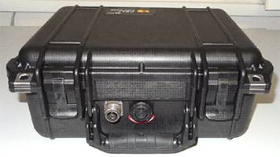
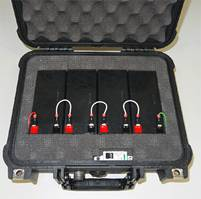
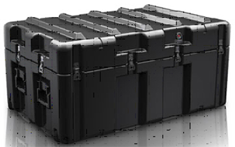

Состав MTK 240Б
В состав MTK 240Б входят:
- Контейнер (мобильный 19” телекоммуникационный шкаф) - 1 шт.;
- Станция телефонная АТСЭ ФМС (блок БМК) (19”, 1U) - 1 шт.;
- Аппаратура цифровых систем передачи Орион-3 (19” автономная) - 2 шт (в т.ч. выносная);
- Место для установки аппаратуры АЕ1-600А - 1 шт. (комплектуется по месту эксплуатации);
- Система электропитания на 48(60)В - 1 шт.;
- Панель коммутации - 1 шт.;
- Панель управления - 1 шт.;
- ЗИП-О (в сумке-кармане контейнера) - 1 шт.;
- Эксплуатационная документация (в сумке-кармане контейнера) - 1 шт.;


Cостав блока аккумуляторных батарей:
- Кейс - 1 шт.;
- АКБ - 4 шт..
Cостав контейнера для ТА:
- Кейс - 1 шт.;
- Телефонные аппараты типа "Нефрит-2 АТС" - 16 шт.;
- АРМ оперативного состава типа Ноутбук для ПД - 1 к-т;
- Витая пара 20м - 2 к-та;
- Провод заземления 5м - 1 к-т.

Комплекс мобильный телекоммуникационный МТК-240Б обеспечивает:
- функционирование встроенного автоматизированного рабочего места оператора управления средствами связи, оборудованного ПЭВМ и соответствующим программным обеспечением;
- организацию цифровой системы передачи с использованием модема Орион-3, обеспечивающего дуплексную передачу информации со скоростью до 5632 кбит/с (интерфейсы 4хЕ1 и 4хEthernet 10/100 BaseT) по одной паре кабеля П-274М длиной до 10 км.;
- развертывание открытых сетей передачи данных и видеоконференцсвязи;
- шифрование/дешифрование с гарантированной стойкостью канала Е1;
- развертывание засекреченных сетей передачи данных, видеоконференцсвязи, а также сети автоматической телефонной связи емкостью до 16 двухпроводных аналоговых абонентских линий;
- автоматическую коммутацию абонентов, как между собой, так и на цифровой канал Е1;
- ручную коммутацию открытых и засекреченных каналов Е1 и Ethernet 10/100BaseT с возможностью их вывода на кабельный ввод;
- размещение телекоммуникационного оборудования в ударопрочном, пыле- и влагозащищенном контейнере.